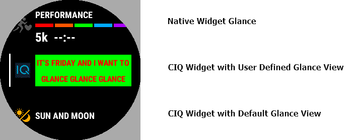

Glances
Since API level 3.1.0
The intention of widgets was to make various kinds of information that are important to the user available at a glance. While the app carousel does allow quick navigation, navigating the loop may require launching numerous applications to get to what you're looking for. It also dedicates the entire screen for a given context.
Glances, introduced with the fēnix® 6 device, turn the presentation of widgets into a dashboard. Instead of a carousel, the user is presented with a list of metrics. Selecting a list item will launch the widget. API level 3.1.0 added the ability for developers to support this feature.
Relevant APIs
| API | Purpose | API Level |
|---|---|---|
| AppBase.getGlanceView() | Called by the system to retrieve your glance | 3.1.0 |
| WatchUi.GlanceView | Implementation of your application glance view on the glance list | 3.1.0 |
How to Enable Glance Support in Widget
The WatchUi.GlanceView allows an app to implement a Glance. Think of the WatchUi.GlanceView as a small canvas to present an executive summary from your widget. The WatchUi.GlanceView is similar to other WatchUi.View objects but should only be used for implementing a Glance. Override the AppBase.getGlanceView() and return your implementation of WatchUi.GlanceViewto add Glance support.
In devices before API level 4.0.0 if a widget doesn't override , default WatchUi.GlanceView will be used, which simply shows the name of the widget. In API level 4.0.0 and above, apps and widgets must implement a glance view to appear in the glance list.

How Widgets Start on "Glance Page"
When a widget is shown as part of the "Glance Page", it will be started in Glance mode with limited memory allocated (32KB for most devices).
Similar to background services, developers can use the :glance annotation to indicate which modules and / or classes are necessary when running a Widget in Glance mode. Just like background services using the annotation selectively allows developers to limit memory usage when running in glance mode.
When designing widgets and widget glances, it's best to think of them as somewhat independent items that will function together. There is no guarantee that a widget will always start in glance mode, for example, before transitioning to its standard widget mode.
Glance Lifecycle
Depending on a device's resource limitations, WatchUi.GlanceView can be updated in two different ways.
Live UI Update
Devices that have ample resources 1 will start the Widget in Glance mode, and keep it alive. The provided WatchUi.GlanceView will be updated as needed by the system, and calls to WatchUi.requestUpdate() will trigger a WatchUi.View update as expected.
Note: It's highly recommended that the update rate should be kept under 1HZ to provide a better scrolling experience.
Background UI Update
Devices that have less memory2 will start the app only when the system deems it appropriate, and calls to WatchUi.requestUpdate() will have no effect. Such a device could update their glance view when it becomes visible (activated) and at least 30 seconds since last update.
During a background update, the Widget and its WatchUi.GlanceView will run through a complete life cycle. The Application.AppBase functions AppBase.onStart(), AppBase.getGlanceView() will be called to start the app and retrieve the view. Once the WatchUi.GlanceView has been retrieved, the View functions View.onLayout(), View.onShow(), View.onUpdate() and View.onHide() will be called. The AppBase.onStop() function will be called upon app termination, and the app will be shut down.
All content that is rendered to the Graphics.Dc passed to will be cached on the filesystem and used to display until the next time the system decides to do an update.
Best Practices
Most functionality supported in Widget is still supported when running as a Glance, such as accessing application storage and making web requests. However, developers should focus on making WatchUi.GlanceView quick to load and moving CPU intensive work to a Background service.